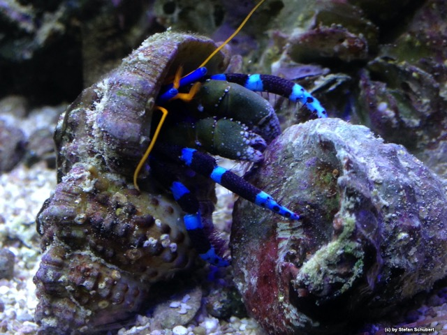

|  |
Do we have a broken file link?
Good news is: YOU can help! First wait a while and try again.
If you can reproduce the error please submit a trouble ticket with detail description what happened
and led to the problem at: projects Issues
tracker. Thanks for supporting the project and sorry for any inconvenience caused. |